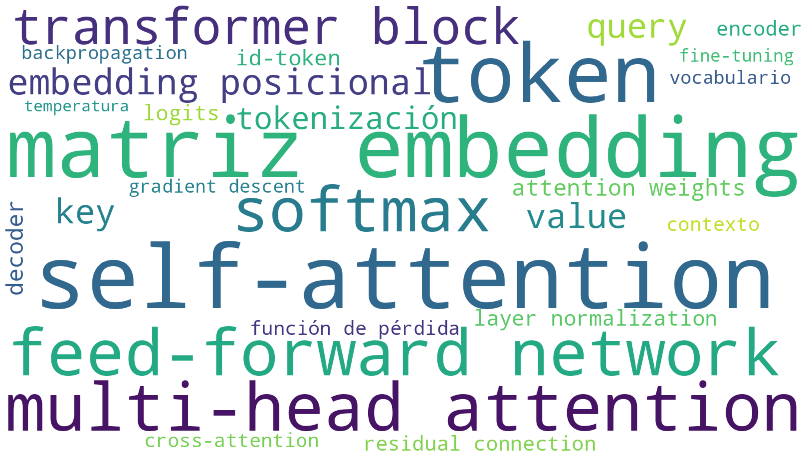

Términos ordenados por bloque funcional, correspondientes a la nube de palabras generada previamente. Complemento del curso Investigación Científica Potenciada por Inteligencia Artificial.
Visualización de los términos clave del glosario; el tamaño refleja su relevancia en el modelo.
